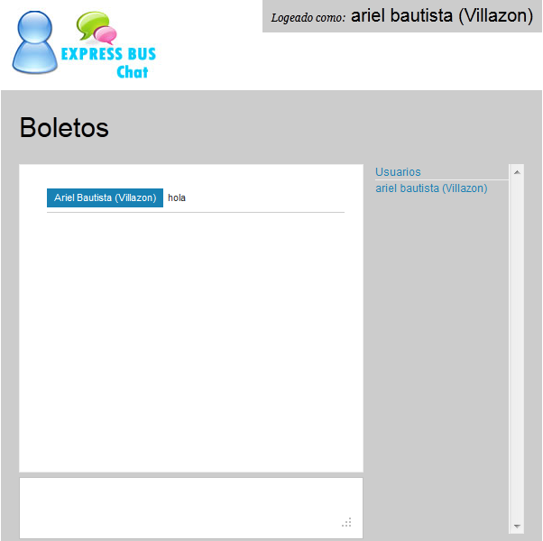
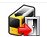
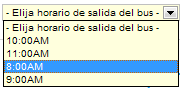

Ayuda Gestor de Boletos
Contenido:
- Vista General
- Barra de Menús
- Barra de Información Usuario
- Barra de Herramientas
- Barra de Información Bus
- Barra de Configuración Bus
- Bus Interactivo
- Información de Asientos
Vista General
Barra de Menús

La barra de menús nos permite tener un acceso direccto un sector del sistema, permite una mejor navegación por el sistema.
La barra de menús varia en base al tipo de usuario logeado (niveles), si ingresa el super admin tendra mayores opciones en la barra de menús, adiferencia de un usuario de nivel bajo solo vera la barra de menús relacionado con el cargo que este ocupa.
Barra de Información Usuario

La barra de información usuario nos muestra la información del usuario Logeado, también nos permite tener acceso directo a mensajesprovenientes de otros usuarios del sistema, podemos finalizar la aplicación de forma segura haciendo clic en Finalizar.
Barra de Herramientas

Esta el la barra de herramientas del gestor de boletos, cada botón nos permite ejecutar una acción en concreto, a continuación explicamos el funcionamiento de cada botón.
 Actualizar
Actualizar
Este botón nos permite actualizar la página de forma manual. De todas formas el sistema se actualiza automaticamente.
Puede ser utilizado para refrescar el estado del bus, permitiendo visualizar el estado de los asientos.
Confirmar Reserva
Este botón nos permite confirmar una reserva de un asiento hecho anteriormente, al presionar el botón aprarece la ventana de confirmacion en la cual colocamos el numero de asiento a confirmar.
El número de asiento debera estar en estado reservado (color verde). Una ves confirmado el asiento este cambiara su estado a vendido e imprimira su boleto.
Anular Reserva
Este botón nos permite anular una reserva de un asiento hecho anteriormente, al presionar el botón aparece la ventana de confirmación en la cual colocamos el número de asiento.
El número de asiento debe estar en estado reservado (color verde) una vez confirmado el asiento este cambiara su estado a libre.
Express Chat
Este botón nos permite abrir una venta para poder ingreasr al chat y tener una comunicacion con cualquier terminal en tiempo real.
Generar Lista
Este botón nos permite generar e imprimir una lista de todos los pasajeros que efectuaran el viaje, una vez generado la lista podemos imprimirla.
.
podemos imprimir el número de copias que nesecitemos por regla de transito una copia devera ser entregada a transito, otra la tendra el conductor del bus y una quedara en la ofician o terminal.
 Cerrar Bus
Este botón nos permite cerrar toda operación en el bus, es empleado cuando se completa la plaza total o cuando esta partiendo de la terminal.
Al presionar el botón aparece la ventana , en donde tendremos que colocar el número de identificación del Bus.
Una vez cerrado el bus no se podra efectuar ninguna operación en el (ventas,reservas,liberar asiento,etc).
el bus podra ser reutilizado al día siguiente de la fecha de partida, esto solo en la terminal que efectuo el cierre otras terminales podran utilizar el bus normalmente de acuerdo al recorrido del bus.
Vaciar Bus
Este botón nos permite vaciar ó liberar todos los asientos del bus una vez este llego a su destino final, de esta forma el bus estara preparado para una nueva partida.
Se debe colocar el número de identificación del bus, solo las terminales autorizadas prodran realizar esta operación.
Barra de Información Bus
La barra de información del bus muestra, información del bus seleccionado actualmente por el usuario con los siguientes datos:
Bus Elegido.- muestra el número de identificación del Bus (no es la matrícula).
Fecha Elegida.- muestra la fecha de viaje del Bus esto varia en funcion a la terminal.
Horario de Salida.- muestra la hora de salida del Bus esto varia en funcion a la terminal.
Clase.- muestra el nivel de confort del Bus (cama, semi-cama, normal).
Asientos.- muestra el número de asientos totales que dispone el Bus.
Destinos.- muestra los destinos principales del Bus Generalmente en origen y destino.
Lib Gen.- muestra el modélo de distribución de asientos segun el estandar adoptado por el Bus por defecto Express Bus biene con una solo módulo de generación, es posible instalar más módulos esto en el gestor de isntalación, cada módulo debera ser creado deacuerdo al módelo del Bus y a la disposición de asientos y cantidad de asientos más información en la web del autor www.arielmax.com.ar.
Es muy importante verificar siempre esta barra de información, si omitimos esto podemos cometer serios errores en venta de boletos ya sea en fecha, horaios, o destinos.
Barra de configuración Bus
La barra de configuración nos permite establecer parametros para el Bus estos parámetros son los siguientes:
Restablecer Asiento
Esta opción nos permite resetear un asiento que esta en estado procesando (color gris), si este fue ocacionado por el usuario, para otro usuario del sistema no tendra efecto.
Es utilizado cuando por alguna razón sea virus, corte eléctrico, dejamos la ventana del formulario de venta al cliente abierta, el estado del asiento se coloca en procesando esto con la finalidad de que otras terminales no puedan vender el asiento hasta finalizar la venta ,esto para evitar duplicidad de asientos, el estado del asiento cambiara a un color gris indicando al resto de los usuarios que el asiento esta siendo vendido, mientras el usuario llena el formulario de venta, pero si el usuario por accidente cierra la ventana del formulario, o el equipo se apaga o cualquier otro caso, aunque ingrese en el sistema, el estado del asiento no cambiara provocando que nadie venda ese asiento.
Para reestableser al estado original se debe colocar el numero de asiento en el cuadro de texto y presionar restablecer, seguidamente el asiento estara nuevamente disponible, utilizalo solo en caso de emergencia.
Reloj y Fecha
Este muestra un relog con la hora actual del sistema, también muestra la fecha actual correspondiente al día.
Seleccionar Hora de Salida
Podemos seleccionar de la lista un horario de salida del Bus, es nesesario colocar la hora de partida del Bus, por defecto sistema trae un solo horario 8:AM, para agreagr mas horarios, se tine que ingresar a configuracion global situado en el menú principal.
Selecionar Bus
Podemos seleccionar un bus, utilizando su número de identificacón, el bus seleccionado tiene que ser el que realizara el viaje y corresponder con el horario seleccionado anteriormente.
El sistema por defecto trae instalado un bus 3012, para agreagar mas buses ingresa a gestor de buses, en el menú principal.
Seleccionar Fecha
Podemos seleccionar la fecha de viaje del bus seleccionado anteriormente, al presionar en el icono del calendario , se desplegara un pequeño calendario en donde seleccionaremos la fecha en el que el bus realizara el viaje.
Si el bus viajara hoy seleccionamos la fecha de hoy, si se desea hacer una reserva de un asiento para una fecha diferente esto es posible podemos adelantarnos en el calendario fijar una fecha y efectuar la reserva, cuando llege la fecha se podra confirmar la reserva.
Aplicar Cambios

Una vez seleccinado la hora, bus y la fecha presionamos el botón Aplicar Cambios el sistema aplicara la nueva configuración.
Es nesesario configurar este panel para cada bus y para cada día que se realiza la venta, ademas debemos verificar esta configuración con la Barra de Información Bus vista más arriba.
Bus Interactivo
El bus interactivo nos permite realizar la venta y reserva de asientos en el bus, es facil de utilizar solo tenemos que hacer clic en el asiento que deseamos vender, al hacer clic nos aparece el formulario de cliente, llenamos la información del cliente y procedemos a guardar, se imprime el boleto.
Al momento de hacer clic en el asiento este cambiara su estado a procesando (color gris), dependiendo de la operación que realizada si vendemos cambiara a (color rojo), si realizamos una reserva cambiara a un (color verde).
Podemos abrir viros formularios a la vez esto en caso de una venta familiar ó de un grupo numeros de pasajeros solo hacemos clic en los asientos y minimizamos las ventanas de formulario de cliente y luego llenamos una a una con la finalidad de que esos asientos no sean vendidos mietras se llenan los formularios.
Información de Asiento
Estos muestran informción sobre el destino del ocupante del asiento, si el asiento no tine nungun ocupante mostrara que esta libre.